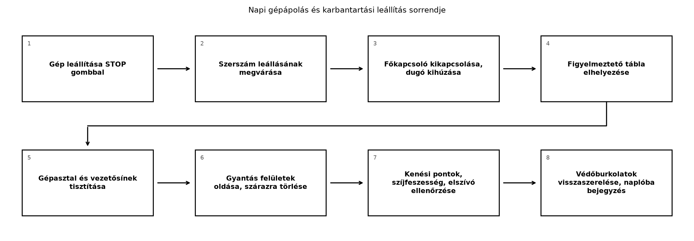

Műhelyhelyzet: a tanuló vastagsági gyalugépen dolgozik. A gép eleinte szépen, halkan vág. Néhány hét múlva a felület csíkos lesz, a gép „nyöszörög”, a kések megégetik a felületet. Az asztalos először a szerszámot okolja. Aztán kiderül: a vezetősínen por és gyanta ült meg, a szíj megcsúszott, a kések tompák, és a gép ápolása elmaradt. A gép csak akkor dolgozik pontosan és biztonságosan, ha rendszeresen tisztítják, kenik, ellenőrzik és időben élezik a szerszámait.
A gépápolás nem takarításból áll csupán. A faipari gép üzemi körülménye a por, a gyanta, a forgács és a hő. Ha ezeket nem kezeljük, a gép pontatlanná válik, gyorsabban kopik, és balesetveszélyes lehet. Például a felgyülemlett fapor a szíj csúszását okozza, a gyanta a késtengelyre ragad, az eldugult elszívó pedig visszaszórja a port.
Definíció. Gépápolás: a gép üzemi állapotának megőrzésére végzett rendszeres, egyszerű műveletek összessége: tisztítás, kenés, gyantaeltávolítás, kisebb ellenőrzések. A gépápolás a kezelő napi feladata.
Definíció. Karbantartás: minden olyan műszaki és szervezési tevékenység, amely a gép működőképességét, pontosságát és biztonságát fenntartja, vagy a meghibásodást elhárítja. A karbantartás lehet tervszerű vagy hibaelhárító.
Definíció. Élezés: a forgácsoló szerszám élének utánmunkálása, amely a tompa, kicsorbult, kopott élt ismét használhatóvá teszi. Az élezés gépi köszörüléssel vagy kézi fenéssel történhet.
Definíció. Karbantartási napló: olyan dokumentum, amelyben rögzítjük a gépen végzett karbantartási, javítási és ellenőrzési műveleteket, az észlelt hibákat és a következő esedékes beavatkozást.
Szabvány. A faipari gépek biztonsági követelményeit az MSZ EN ISO 19085 sorozat tárgyalja (a hatályos részek ellenőrizendők). A gépkönyv karbantartási utasításai a gép biztonságos üzemeltetésének részei. A faipari gépek kezelőjének a gyártó előírásai szerint kell végeznie a tisztítást, kenést és beállítást. A munkaeszközök időszakos ellenőrzésére és karbantartására a munkaeszközökről szóló hazai rendelet vonatkozik (ellenőrizendő: hatályos jogszabályszám, követelmények). A villamos berendezések vizsgálatát villamos szakember végzi, a könyv csak felhasználói szemrevételezést tanít.
Mindig a gépkönyv a mérvadó. A gépkönyv megadja:
Továbbvitt eredmény. A karbantartási naplót a későbbi gépi alfejezetekben használják, a Vállalkozásműködtetés részben pedig a vállalkozás műszaki dokumentációjának része lesz. A vizsgaremek bemutatásakor is jelezheti a tanuló, hogy a gépi munkát karbantartott, ellenőrzött géppel végezte.
Gépbiztonság. Faipari gépet csak betanított, felügyelt tanuló kezelhet; védőberendezés nélkül soha. Karbantartás, tisztítás, élezés, szíjcsere, szerszám- vagy beállítás előtt a gépet mindig feszültségmentesíteni kell, és meg kell akadályozni, hogy valaki beindítsa.
A képsor kockái a lista lépéseit követik. A 4. kockán a főkapcsolót személyes lakat zárja; ha többen dolgoznak a gépen, leválasztó csipeszre mindenki a saját lakatját teszi. A szaggatott keretes kocka kiegészítő próba: a lezárt főkapcsolónál az indítógomb megnyomására a gép nem indulhat el (ha a gépkönyv így írja elő).
Tilos áram alatt, forgó szerszám mellett takarítani, kenni, szíjat cserélni vagy élezni. A villamos részt csak villamos szakember javíthatja.
A napi gépápolás a legolcsóbb és leghatékonyabb megelőzés. Az alábbi lépéseket a gépkönyv pontosíthatja.
Az ábra bal oldala a benyomásos ellenőrzést mutatja: a szabad szíjág közepét F erővel benyomjuk, és az e benyomódást a gépkönyv értékével vetjük össze – csak leválasztott, álló gépen. A jobb oldal négy hibát mutat, amelyet a szíjburkolat felnyitásakor keresünk: repedezett hátoldal, kifényesedett (csúszott) oldallap, kivájt tárcsahorony és a két tárcsa rossz egytengelyűsége (vonalzóval ellenőrizve).
A karbantartást többféleképpen csoportosíthatjuk aszerint, mikor és miért végezzük.
A kezelő által végzett gépápolás: tisztítás, szemrevételezés, kenési pontok ellenőrzése, a védőberendezések és az elszívás meglétének ellenőrzése, próbajáratás.
Meghatározott időközönként végzett művelet: heti, havi, negyedéves vagy üzemóra-alapú ellenőrzés. Például:
A tervszerű megelőző karbantartás nem várja meg a hibát. A karbantartási terv alapján a kopó alkatrészeket időben cserélik, a gépet beállítják, és így csökkentik a váratlan leállást. Például egy szalagfűrész szíját nem akkor cseréljük, amikor elszakad, hanem amikor repedezni kezd.
Akkor végezzük, amikor a hiba már bekövetkezett: a szíj elszakadt, a kés kicsorbult, a csapágy hangos. A hibaelhárítás drágább, mert leáll a termelés, és gyakran nagyobb a kár.
A faipari műhelyben a tervszerű megelőző karbantartást érdemes előnyben részesíteni. Ezt a gépi alfejezetekben is alkalmazzuk.
A karbantartási napló segít nyomon követni, melyik gépen mit végeztünk, és mikor esedékes a következő munka. A napló legyen egyszerű, de pontos. A műhelyben papíron vagy táblázatkezelővel vezethető.
Táblázat. Karbantartási napló mintasorai
| Dátum | Gép | Üzemóra (h) | Elvégzett művelet | Észrevétel / hiba | Dolgozó | Következő esedékesség |
|---|---|---|---|---|---|---|
| 2026. 02. 12. | Vastagsági gyalu | 1240 | Asztal és késtengely tisztítása, gyantaoldás; szíjfeszesség ellenőrzése | Enyhe szíjcsúszás, utánfeszítve | Nagy P. | 2026. 02. 19. |
| 2026. 02. 12. | Körfűrész | 980 | Fűrészlap szemrevételezése, elszívócsatlakozás ellenőrzése | A fűrészlap tompa, élezésre | Kis A. | 2026. 02. 13. |
A karbantartási terv ehhez hasonló ütemezést ad:
Táblázat. Kisüzemi géppark karbantartási terve (minta)
| Gyakoriság | Feladat | Felelős |
|---|---|---|
| Naponta | Takarítás, elszívás ellenőrzése, védőberendezések, próbajárat | Kezelő |
| Hetente | Gyantaoldás, szíjfeszesség, kábelek szemle | Kezelő |
| Havonta | Csapágyhang, csatlakozók, fékhatás | Kezelő |
| Negyedévente | Elszívócsatorna, szűrő, biztonsági kapcsolók | Karbantartó |
| Évente | Villamos és biztonsági felülvizsgálat | Villamos szakember |
Az üzemóra-nyilvántartás alapján a terv pontosítható. Például ha egy gép napi 6 órát üzemel, egy 200 üzemóránként esedékes karbantartás körülbelül 200 / (6 × 5) = 6,7 hét után esedékes, tehát gyakorlatilag 7 hetente kell elvégezni.
A faipari szerszámok élezése külön szakma. A tanuló az élezőgépet csak betanítás után, oktató felügyelete mellett használhatja. Az élezőgép is veszélyes gép.
Figyelem. A forgó köszörűkoronghoz nem szabad kesztyűben nyúlni. A laza ruházat, haj, ékszer fokozott veszély. Mindig viselj védőszemüveget, és ügyelj a vízhűtésre.
A gyalukés-élező gép mágneslemezen vagy mechanikus befogóban rögzíti a gyalukést. A késtengelyből kiszerelt kést a szánon a köszörűkorong alá vezetik. A hűtővíz megakadályozza az él megégését.
A körfűrészlap-élező gép fogosztó szerkezettel egyenként elfordítja a fogakat. A köszörűkorong a fog homlok- és hátlapját a gyártó által megadott szögeken élezi. A vízhűtéses vagy száraz élezés attól függ, milyen a lap anyaga és a korong.
A szalagfűrész-élező gép a fűrészszalag fogait gépi úton élezi. A szalagot folyamatosan, egyenletesen továbbítja a gép, a köszörűkorong pedig fogról fogra követi a fogosztást. Az élezés után a fogak magasságát ellenőrizni kell.
Kisebb élek, például kéziszerszámok, vésők, felsőmaró-vezetőcsúcsok kézzel is élezhetők olajos vagy vizes fenőkövön. A gyalukést és a körfűrészlapot általában élezőgépen élezzük, mert a pontos szög és a hűtés gépi úton tartható legbiztosabban.
Ha a műhelyben nincs élezőgép, a késeket és fűrészlapokat élező szolgáltatóhoz kell eljuttatni. Ilyenkor is fontos:
Számítás 1. Köszörűkorong
fordulatszám-ellenőrzése.
Adott egy élezőgép, amelynek orsója 2 800 min⁻¹ fordulatszámon jár. A
köszörűkorong átmérője 250 mm. A korong gyártója legfeljebb 35 m/s
kerületi sebességet enged meg (tájékoztató érték, ellenőrizendő).
Szabad-e ezt a korongot használni?
Keresett: a tényleges korong-kerületi sebesség.
Behelyettesítve:
A tényleges sebesség 36,6 m/s, tehát nagyobb, mint a megengedett 35 m/s. A korongot így tilos felszerelni, mert a túl nagy kerületi sebesség szétrobbanhat. Kisebb átmérőjű korongot vagy alacsonyabb fordulatszámú gépet kell választani.
Számítás 2. Fogásvétel és menetszám élezéskor.
Egy gyalukés élén 0,25 mm kopást mérünk. A nedves élezőgépen menetenként
0,02 mm fogást veszünk (tájékoztató). Hány menet szükséges?
A menetszámot felfelé kerekítjük: 13 menet. Ezután következik a finom utánelezés vagy fenés. Az érték csak becslés, mert a kopás eloszlása nem egyenletes.

Az ábra a karbantartás előtti és a napi gépápolási folyamat sorrendjét mutatja. A sorrend azért fontos, mert a tisztítást és a beállítást csak feszültségmentes, teljesen leállt gépen szabad végezni.
A második ábra a hibaelemzési eset (csíkos felület) okát mutatja. Ha a két kés kiállása eltér (szemléltetésül 1,1 és 0,9 mm), az alacsonyabb kés vágóköre a magasabbé belsejébe esik, ezért nem forgácsol: a késnyom-osztás a szerinti érték kétszerese lesz, a felület durvább, hullámos. A kicsorbult kés a csorba helyén nem vág, így a felületen hosszanti, kiálló csík marad. Az interaktív változatban a késkiállás, az előtolás, a fordulatszám és a késszám állítható.
| Hiba | Lehetséges ok | Helyes gyakorlat |
|---|---|---|
| Csíkos gyalult felület | Tompa vagy kicsorbult kés, szennyezett késtengely, nem megfelelő késbeállítás | Késtengely tisztítása, éles kés, sablonnal pontos beállítás |
| Égett fűrészvágási él | Tompa fűrészlap, gyanta a lapon, rossz előtolás, megcsúszott szíj | Lap tisztítása, élezése, szíjfeszesség ellenőrzése |
| Kék elszíneződés az élezett késen | Túl nagy fogásvétel, elégtelen hűtés, túl erős szorítás | Kis fogás, vízhűtés, pihentetés, a gyártó előírása |
| Ragadós, nehezen mozgó vezetősín | Túlzott kenés, porral keveredett olaj | Szárazra törlés, csak előírt kenőanyag |
| A gép nem indul karbantartás után | Védőburkolat nincs visszaszerelve, biztonsági kapcsoló nyitva | Minden burkolat vissza, kapcsoló ellenőrzése |
Tünet. A vastagsági gyalugép a deszkán hosszanti, párhuzamos csíkokat hagy. A csíkok nem egyenletesek.
Lehetséges okok. Tompa kés, kicsorbult kés, a késtengelyben gyanta, az elszívó nem megfelelő, a kés beállítása egyenetlen, a szíj megcsúszik.
Vizsgálat. A tanuló a gépet szabályosan leállítja, feszültségmentesíti, megvárja a késtengely leállását. Szemrevételezi a késtengelyt: az egyik kés élén csorba látható, alatta sötét gyantalerakódás van. A másik kés kicsit alacsonyabban áll.
Valódi ok. Az egyik kés kicsorbult, alátétje szennyezett, ezért a késtengelyben nem egyenletes a késkiállás. Emiatt csak az egyik kés dolgozik, és csíkot hagy.
Javítás. A késtengelyt gyantaoldóval megtisztítják, a sérült kést élezik vagy cserélik, a késkiállást a gyártó sablonja szerint beállítják. A szíjfeszességet is ellenőrzik.
Megelőzés. Heti gyantaeltávolítás, késcserekor a tengely tisztítása, minden kés azonos beállítása, próbadarab gyalulása, bejegyzés a karbantartási naplóba.
Asztalosműhelyben a szalagfűrész fűrészszalagja rendszeresen csúszott. A gép néha eldobta a vágási vonalat, a fogak megégtek. Az asztalos mindig csak a szalagot cserélte, és gyorsabban dolgozott. A hiba azonban visszatért.
Végül a karbantartási naplóból kiderült, hogy a szíjfeszességet már hónapok óta nem ellenőrizték. A hajtószíj elkopott, a tárcsa csúszott, a fűrészszalag fordulatszáma ingadozott. A tanulság: a tünetet könnyű a szerszámra fogni, de a valódi ok gyakran a gép hajtásában, beállításában vagy tisztaságában van. Azóta hetente ellenőrzik a szíjfeszességet, és a naplóba beírják az üzemórát is.
1. feladat (A). Fogalmazd meg röviden, mi a különbség a gépápolás és a karbantartás között.
2. feladat (A). Írd le számozott lépésekkel, hogyan készítesz elő egy karbantartási műveletet a gyalugépen.
3. feladat (B). Állíts össze heti karbantartási ellenőrzőlistát egy asztalos körfűrészgéphez és egy szalagfűrészgéphez. Használd a gépkönyv nélküli alapvető felhasználói ellenőrzéseket.
4. feladat (B). Egy karbantartási naplóban az alábbi bejegyzés szerepel: „Körfűrész – fűrészlap tompa, élezésre”. Milyen további adatokat kell még beírni, hogy a bejegyzés dokumentált legyen?
5. feladat (C). Kisüzemi műhelyben öt gép van: körfűrész, egyengető gyalu, vastagsági gyalu, szalagfűrész, alsómaró. Készíts havi karbantartási tervet táblázatban: gép, feladat, gyakoriság, felelős, dokumentálás. Indokold, miért kerül néhány feladat csak szakemberhez.
6. feladat (D). Végezz el egy szimulált élezés-ellenőrzést. Adott: a gyalukés élezés után, a próbadeszkán végzett gyalulás során a felület egyik oldalán enyhe csík látható. Fogalmazd meg a vizsgálati lépéseket, a lehetséges okokat, és írd be a karbantartási naplóba a megfelelő bejegyzést. A válaszban nevezd meg a biztonsági leválasztás lépéseit is.
Önellenőrzés – válaszok
1. feladat megoldása. A gépápolás a kezelő napi, egyszerű művelete: tisztítás, kenés, gyantaoldás, kisebb ellenőrzés. A karbantartás ennél tágabb: magában foglalja az ápolást, a beállításokat, a kopó alkatrészek cseréjét, a hibaelhárítást és a dokumentálást.
2. feladat megoldása.
1. Leállítom a gépet.
2. Megvárom, amíg a késtengely megáll.
3. Kikapcsolom a főkapcsolót.
4. Kihúzom a dugót, vagy lezárom a főkapcsolót.
5. Figyelmeztető táblát teszek ki.
6. Felnyitom a védőburkolatot, és a műveletet csak ezután kezdem.
3. feladat megoldása.
Körfűrész: asztal és ütközők tisztítása, fűrészlap gyantaeltávolítása,
elszívócsatlakozás ellenőrzése, hasítóék és védőburkolat ellenőrzése,
szíjfeszesség, kábelek szemle.
Szalagfűrész: asztal és vezetősínek tisztítása, szalag állapota,
szalagfeszesség, felső és alsó kerék tisztasága, elszívó, oldalsó
vezetőgörgők ellenőrzése.
4. feladat megoldása.
A bejegyzéshez kell még: dátum, gép pontos megnevezése, üzemóra, a hiba
rövid leírása, a szükséges javítás vagy élezés, a dolgozó neve, a
következő esedékesség. Például: „2026. 02. 13., asztalos körfűrészgép,
üzemóra 980 h, fűrészlap tompa, élezésre; a lapot élező szolgáltatónak
átadva; Kis A.; várható vissza: 2026. 02. 18.”
5. feladat megoldása.
A havi terv tartalmazza: a gépek vezetősíneinek és asztalainak alapos
tisztítását, gyantaoldást, szíjfeszesség és kábel ellenőrzést,
biztonsági kapcsolók működését, a szerszámok állapotát. A villamos
csatlakozók és a motor belső ellenőrzése villamos szakemberhez kerül,
mert a könyvben tanított felhasználói szint ezt nem foglalja magában. A
dokumentálás a karbantartási naplóban történik.
6. feladat megoldása.
Először a gépet biztonságosan leállítom. Megvárom a késtengely
leállását, kikapcsolom a főkapcsolót, kihúzom a dugót, és táblát
helyezek ki. Megvizsgálom a késtengelyt: lehet, hogy gyanta vagy forgács
került az egyik kés alá, a kés kicsorbult, vagy a késkiállás egyenetlen.
A naplóba írható bejegyzés: „Dátum: 2026. 02. 14., Gép: vastagsági
gyalu, Üzemóra: 1240, Észrevétel: próbadarab bal oldalán hosszanti csík,
Javítás: késtengely tisztítása, késellenőrzés, késbeállítás sablonnal,
próbagyalulás. Dolgozó: Nagy P. Következő: 2026. 02. 21.”
A gépápolás a kezelő napi feladata: tisztítás, kenés, gyantaeltávolítás, szíjfeszesség és elszívás ellenőrzése. A karbantartás lehet napi, időszakos, megelőző vagy hibaelhárító. Minden karbantartás előtt a gépet feszültségmentesíteni, a forgó szerszámot leállítani és a visszakapcsolást megakadályozni kell. A karbantartási napló rögzíti a dátumot, a gépet, az üzemórát, a műveletet, a dolgozót és a következő esedékességet. A gépkönyv karbantartási utasításai mérvadók. Az élezőgépeken a gyalukéseket, körfűrészlapokat és fűrészszalagokat csak betanított kezelő, védőburkolattal, hűtéssel élezheti. A kézi élezés kisebb szerszámokhoz való; nagy szerszámokat gyakran szolgáltató élez. Továbbvitt eredmény. A karbantartási napló a későbbi gépi alfejezetekben és a Vállalkozásműködtetés részben a műszaki dokumentáció bizonyítéka: a gépek állapota, az élezések és javítások nyomon követhetők. A vizsgaremek munkanaplójában is jelezhető, hogy a termék karbantartott, ellenőrzött gépparkon készült.
Forrástípusok: faipari gépek gépkönyvei, gyártói karbantartási táblázatok, élezőgép-kezelési útmutatók, MSZ EN ISO 19085 sorozat, a munkaeszközökről szóló hazai rendelet, MSZT-, EU-OSHA és hazai (NMH/OMMF) munkavédelmi tájékoztatók, műszaki szakkönyvek.
Ellenőrizendő: az MSZ EN ISO 19085 sorozat hatályos részei; a munkaeszközök ellenőrzésére és karbantartására vonatkozó hatályos jogszabályi követelmények; a megadott tájékoztató értékek (szíjbenyomódás, fogásvétel, megengedett korong-sebesség, karbantartási gyakoriságok); a gyártói kenőanyag- és élezési adatok. Az élezőgépek és a gépek biztonsági, technológiai adatait mindig az adott gépkönyv és szerszámgyártói adatlap szerint kell ellenőrizni.